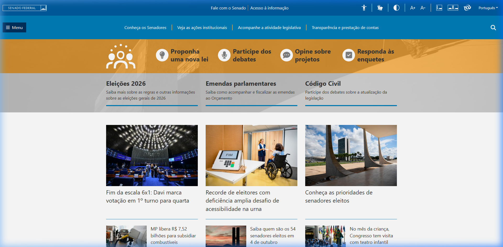
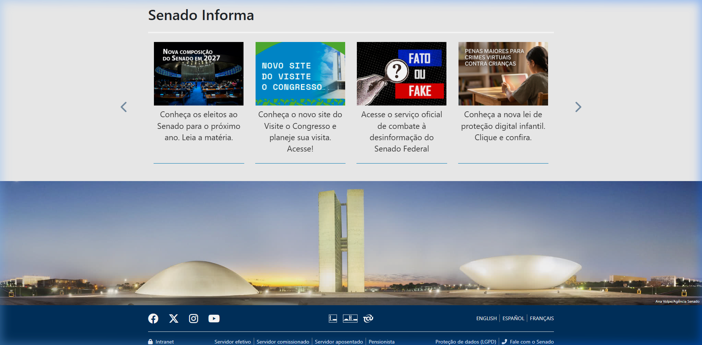
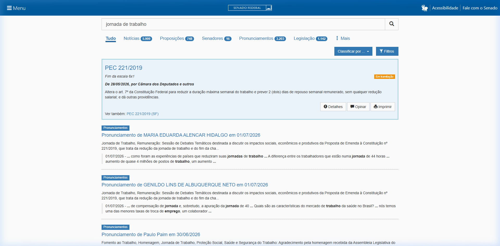
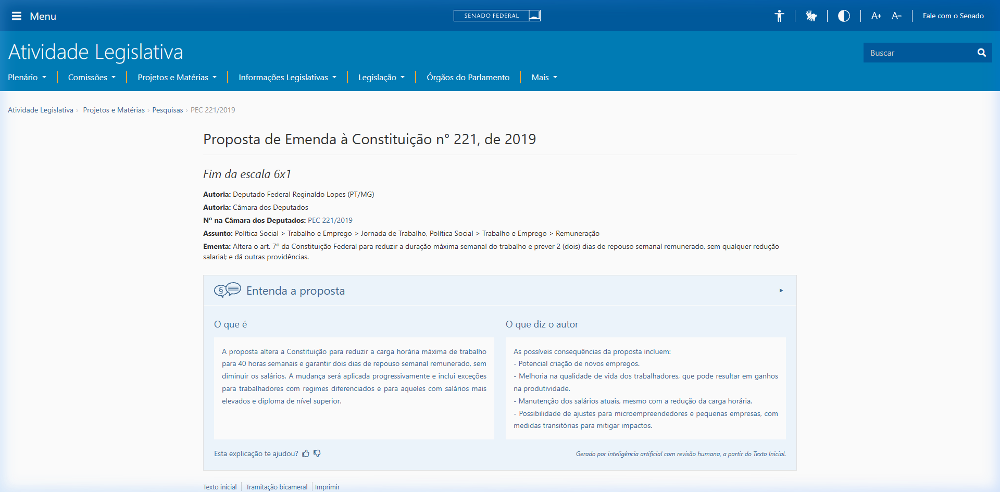
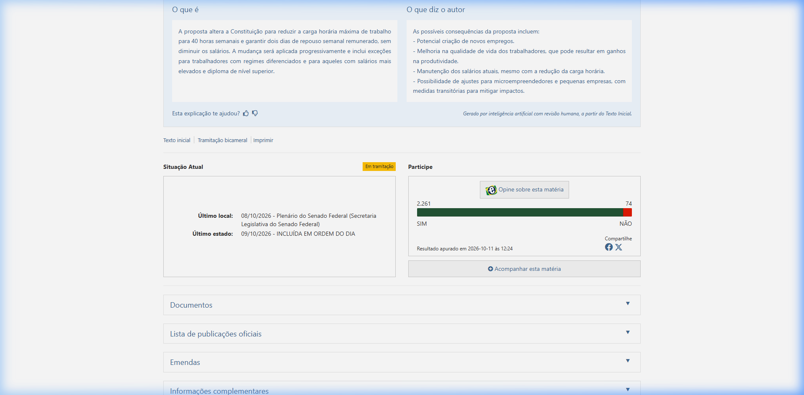
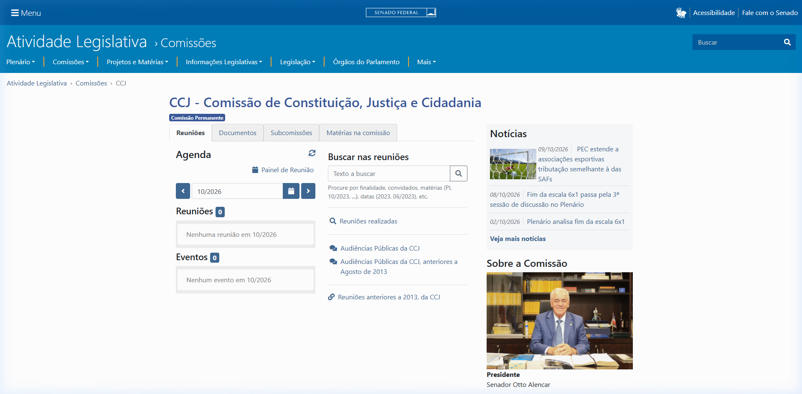
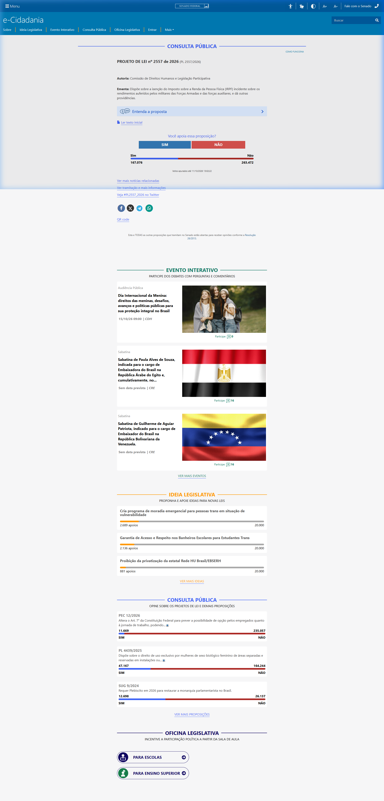
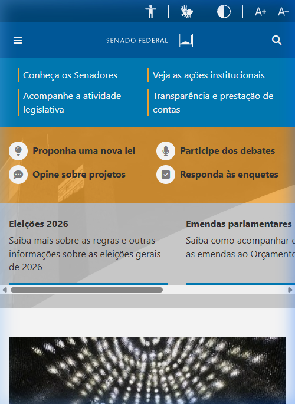
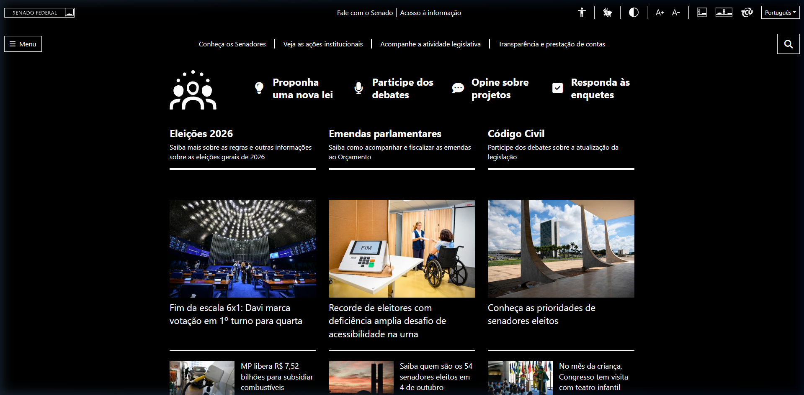

Responsável: Heitor Pinheiro Gonçalves das Chagas — Telas de interface · Autor dos itens: Heitor Pinheiro Gonçalves das Chagas
Telas de interface¶
Tabela de contribuição¶
A Tabela 1 registra quem atuou neste artefato.
| Integrante | Contribuição | Artefato / atividade |
|---|---|---|
| Heitor Pinheiro Gonçalves das Chagas | Definição das telas do reprojeto e do molde de especificação | Estrutura de cada tela |
| Heitor Pinheiro Gonçalves das Chagas | Mapa de elementos, dimensões e estados de cada tela | Telas |
| Claude Sonnet 5.5 (Anthropic) | Levantamento das evidências da Etapa 2, estruturação das telas e formatação Markdown | Agradecimentos |
Tabela 1 — Contribuição neste artefato.
Fonte: elaboração do Grupo 06 (2026).
Introdução¶
Esta página complementa o Guia de estilo e aplica as decisões de tipografia, cores, grid e interação a seis telas do reprojeto do Portal do Senado Federal. Cada tela é detalhada no mesmo molde: objetivo, confronto com o portal atual (evidenciado por capturas reais da plataforma), diagramação de interface (wireframe esquemático), posição e especificação de cada elemento, dimensões por tamanho de tela, estados e acessibilidade. Quem for prototipar (Etapas 4 a 7) ou implementar encontra o que usar e onde colocar (BARBOSA; SILVA, 2010, p. 282–283; MAYHEW, 1999).
As telas nascem das evidências da Etapa 2: as tarefas modeladas na análise de tarefas, os perfis de usuário e os problemas registrados em cada sessão. Os valores de fonte, cor e espaçamento vêm da Tabela 2 (tipografia) e da Tabela 3 (cores) do guia. O contexto de uso está em Características da plataforma, e as metas M0 a M6 e as tarefas T1 a T6, em Metas de usabilidade.
Fundamentos comuns às telas¶
Tamanhos de tela¶
A Tabela 2 define os pontos de quebra usados em todas as telas. Eles seguem o grid do guia e os aparelhos do perfil: monitores Full HD em escritório ou casa e smartphones de 5 a 6,7 polegadas (ambiente de trabalho).
| Dispositivo | Largura de referência | Container | Colunas | Margens laterais | Calha |
|---|---|---|---|---|---|
| Desktop | 1920 px (mínimo 1024 px) | 1200 px centralizado | 12 | 24 px | 24 px |
| Tablet | 768 px | 100% | 8 | 24 px | 16 px |
| Mobile | 360 px (mínimo 320 px) | 100% | 4 (coluna única) | 16 px | 16 px |
Tabela 2 — Pontos de quebra das telas.
Fonte: elaboração do Grupo 06 (2026), a partir do grid do guia de estilo e do perfil consolidado (Etapa 2).
Tokens de espaçamento, forma e foco¶
A Tabela 3 reúne os valores usados em todos os componentes. Tamanhos de fonte e cores não se repetem aqui: seguem as tabelas do guia.
| Token | Valor | Uso |
|---|---|---|
| Espaçamento base | 8 px (múltiplos: 8, 16, 24, 32, 48) | Distância entre elementos, padding de cartões e seções |
| Raio de borda pequeno | 4 px | Botões, campos e etiquetas retangulares |
| Raio de borda médio | 8 px | Cartões, modais e blocos |
| Sombra de cartão | 0 1px 3px rgba(0, 0, 0, 0.12) |
Cartões em repouso |
| Sombra elevada | 0 4px 12px rgba(0, 0, 0, 0.20) |
Menus abertos, modais e cartões em hover |
| Alvo de toque mínimo | 44 × 44 px | Todo elemento clicável, em qualquer dispositivo |
| Anel de foco | contorno de 3 px #004B87, distância de 2 px |
Foco por teclado; em alto contraste, #FFFF00 |
| Borda de campo | 2 px #555555; em foco, #004B87 |
Campos de texto, seleção e filtros |
Tabela 3 — Tokens de espaçamento, forma e foco.
Fonte: elaboração do Grupo 06 (2026).
Componentes reutilizados¶
A Tabela 4 define os componentes que aparecem em mais de uma tela. Cada tela só combina e posiciona esses componentes.
| Componente | Especificação |
|---|---|
| Botão primário | Altura 48 px, padding horizontal 24 px, fundo #002B49, texto branco 16 px peso 600, hover #004B87 |
| Botão secundário | Altura 48 px, borda 2 px #002B49, fundo branco, texto #002B49 16 px peso 600 |
| Botão de voto "Sim" / "Não" | Altura 56 px, texto 18 px peso 600, ícone e rótulo juntos; "Sim" em #1E7E34 e "Não" em #BD2130, ambos com texto branco. A cor nunca é a única pista |
| Campo de busca | Altura 48 px, borda 2 px, ícone de lupa 24 px à esquerda, texto 16 px, botão "Buscar" acoplado à direita |
| Cartão de resultado | Fundo branco, borda 1 px #DCDFE3, raio 8 px, padding 24 px, sombra de cartão |
| Etiqueta de situação | Altura 28 px, padding horizontal 12 px, texto 14 px peso 600, raio 14 px; ícone sempre junto do texto |
| Linha do tempo | Linha vertical de 2 px #DCDFE3, marcador circular de 16 px, data em 14 px peso 600 e descrição em 16 px |
| Paginação | Botões de 44 × 44 px, página atual em #002B49 com texto branco, texto "Página X de Y" visível |
| Modal | Largura 560 px no desktop e 100% no mobile, raio 8 px, sobreposição rgba(0, 0, 0, 0.5); fecha com "X", clique fora ou Esc |
| Mensagem de retorno | Faixa de 16 px de padding com ícone, borda esquerda de 4 px na cor semântica e texto 16 px; nunca some sozinha |
Tabela 4 — Componentes reutilizados nas telas.
Fonte: elaboração do Grupo 06 (2026), a partir do guia de estilo.
Elementos fixos¶
A Tabela 5 descreve o cabeçalho e o rodapé, presentes em todas as telas. O cabeçalho reúne os controles que o portal já oferece (contraste, zoom, Libras e página de acessibilidade), registrados em Características da plataforma.
| Elemento | Posição e tamanho (desktop) | Conteúdo e comportamento |
|---|---|---|
| Barra de acessibilidade | Topo, 12 colunas, altura 40 px, fundo #F4F6F8, texto 14 px |
Acessibilidade, VLibras, alternar contraste, aumentar e diminuir texto, com atalhos Alt + 1, Alt + 2 e Alt + 3. Estado do contraste fica visível no botão |
| Cabeçalho principal | Abaixo da barra, altura 80 px, fundo #002B49 |
Marca à esquerda (colunas 1–3, símbolo de 48 px); busca universal ao centro (colunas 4–10, campo de busca com 48 px); ícone de entrar à direita |
| Menu principal | Faixa abaixo do cabeçalho, altura 56 px, fundo #004B87, texto branco 16 px peso 600 |
Atividade legislativa, Senadores, Notícias, Orçamento, Transparência e Participe (e-Cidadania). Os rótulos ficam sempre visíveis; submenus abrem por clique, foco ou hover e fecham com Esc |
| Trilha de navegação | Logo abaixo do menu, 16 px de margem, texto 14 px | Mostra o caminho (por exemplo, Atividade legislativa › Comissões › CCJ); o último item não é link |
| Rodapé institucional | Fim da página, fundo #002B49, texto branco 14 px, padding 48 px |
Links institucionais e de transparência em quatro colunas no desktop e uma coluna no mobile |
Tabela 5 — Elementos fixos do cabeçalho e do rodapé.
Fonte: elaboração do Grupo 06 (2026), com os controles identificados na inspeção de 03/10/2026.
Estrutura de cada tela¶
Cada tela da seção seguinte repete os blocos da Tabela 6. A numeração dos elementos nos wireframes é a mesma do mapa de elementos.
| Bloco | O que registra |
|---|---|
| Objetivo e tarefa | Tarefa da Etapa 2 atendida, persona, problema do portal atual e design rationale |
| Tela atual | Captura de tela do Portal do Senado Federal real com destaque para as falhas observadas |
| Wireframe | Desenho esquemático da tela de reprojeto com os elementos numerados |
| Mapa de elementos | Número, elemento, posição no grid, tamanho, fonte, cor e comportamento |
| Dimensões | Desktop, tablet e mobile, com alturas, margens e espaçamentos |
| Estados | Padrão, hover, foco, erro, vazio, carregando e alto contraste |
| Acessibilidade | Ordem de tabulação, atalhos, contraste e Libras |
| Metas e princípios | Metas de usabilidade (M0–M6) e tarefas (T1–T6) atendidas |
Tabela 6 — Molde de especificação de cada tela.
Fonte: elaboração do Grupo 06 (2026), a partir de Mayhew (1999) e Barbosa e Silva (2010).
Origem das decisões¶
A Tabela 7 liga cada problema registrado na Etapa 2 à decisão de tela que o enfrenta. É o design rationale que Mayhew (1999) recomenda e dá a justificativa de cada elemento citado abaixo.
| Problema registrado (Etapa 2) | Fonte | Decisão de tela | Tela |
|---|---|---|---|
| A página inicial mostra assuntos demais; Renata quer links diretos para notícias e busca | P2 — Renata | Atalhos por tarefa e notícias recentes no topo; busca sempre visível | 1 |
| O menu é pequeno e "Atividade legislativa" tem pouca visibilidade; "eu nunca pensaria em abrir aqui" | P5 — Marina | Menu com rótulos sempre visíveis e submenu aberto por foco ou clique | 1, 4 |
| A lista de resultados não vem em ordem de data e o período não termina com aviso | P2 — Renata | Ordem padrão da mais nova para a mais antiga, data em destaque, filtro de período e contagem de resultados | 2 |
| Os termos do dia a dia não coincidem com o vocabulário do portal; a busca não diz que nada foi achado | P4 — Marta | Mensagem de resultado vazio com termos alternativos e caminhos diretos | 2 |
| Lucas não distinguiu notícia de proposição nem entendeu "Aguardando despacho" ou a tramitação | P1 — Lucas | Abas por tipo de resultado, etiqueta de situação com explicação em linguagem simples e linha do tempo legível | 2, 3 |
| Marina não conhecia a sigla CCJ e levou cerca de oito minutos até a reunião | P5 — Marina | Nome por extenso junto da sigla, reuniões listadas por data e pauta com resultado de cada item | 4 |
| A área de voto não tem destaque e fica abaixo de blocos institucionais | P3 — Letícia | Botões de voto logo abaixo da ementa, sem rolagem; retorno da autenticação ao mesmo ponto | 5 |
| O portal precisa servir ao computador e ao celular, com contraste e zoom | Plataforma | Versões mobile e de alto contraste das telas | 6 |
Tabela 7 — Problemas da Etapa 2 e decisões de tela correspondentes.
Fonte: elaboração do Grupo 06 (2026), a partir das análises de tarefas e do perfil de usuário da Etapa 2.
Telas¶
Tela 1 — Página inicial¶
Autor do item: Heitor Pinheiro Gonçalves das Chagas
Objetivo e tarefa¶
Dar ao cidadão um ponto de partida orientado por tarefa. Atende as personas de uso ocasional (Lucas, Marta e Marina) e a de levantamento de notícias (Renata), e é a porta de entrada das tarefas T1, T2 e T5 de Metas de usabilidade. O design rationale está nas duas primeiras linhas da Tabela 7: reduzir a sobrecarga de assuntos concorrentes, valorizar a busca universal e estruturar um menu com opções explícitas.
Tela atual do portal¶
A Figura 1 e a Figura 2 exibem a página inicial atual do Portal do Senado Federal, evidenciando o cabeçalho denso, a grande quantidade de blocos noticiosos concorrentes e o rodapé institucional.
Figura 1 — Topo da página inicial atual do Senado Federal (Desktop)


Fonte: Portal do Senado Federal (captura em 11/10/2026).
Figura 2 — Rodapé da página inicial atual do Senado Federal (Desktop)


Fonte: Portal do Senado Federal (captura em 11/10/2026).
Wireframe de reprojeto¶
A Figura 3 mostra o esquema estrutural proposto para o reprojeto da tela inicial no desktop.
+--------------------------------------------------------------------+
| [1] Acessibilidade VLibras Contraste A+ A- |
+--------------------------------------------------------------------+
| [2] SENADO [3] ( Busque por assunto, número ou senador ) [Buscar]|
+--------------------------------------------------------------------+
| [4] Atividade legislativa | Senadores | Notícias | Orçamento | ... |
+--------------------------------------------------------------------+
| [5] O que você quer fazer? |
| +----------------+ +----------------+ +----------------+ +--------+ |
| | Entender uma | | Acompanhar | | Ver reunião | | Votar | |
| | proposta | | notícias | | de comissão | | consulta| |
| +----------------+ +----------------+ +----------------+ +--------+ |
+--------------------------------------------------------------------+
| [6] Notícias recentes (8 col.) | [7] Participe agora (4 col.)|
| 12/10/2026 Título da notícia | Consultas públicas abertas |
| 11/10/2026 Título da notícia | [Participar] |
+--------------------------------------------------------------------+
| [8] Rodapé institucional |
+--------------------------------------------------------------------+
Figura 3 — Wireframe da página inicial do reprojeto (desktop).
Fonte: elaboração do Grupo 06 (2026).
Mapa de elementos¶
A Tabela 8 apresenta o mapa de elementos da página inicial, detalhando a posição, o tamanho, a tipografia, a cor e o comportamento de cada componente.
| Nº | Elemento | Posição | Tamanho | Fonte | Cor | Comportamento |
|---|---|---|---|---|---|---|
| 1 | Barra de acessibilidade | Topo, 12 col. | Altura 40 px | 14 px / 400 | Fundo #F4F6F8, texto #1A1A1A |
Conforme a Tabela 5; atalhos e alternador de alto contraste |
| 2 | Marca | Cabeçalho, col. 1–3 | Símbolo de 48 px | — | Fundo #002B49, símbolo branco |
Link para a página inicial |
| 3 | Busca universal | Cabeçalho, col. 4–10 | Altura 48 px | 16 px / 400 | Texto #1A1A1A, borda #555555 |
Aceita assunto, número (ex.: PL 1234/2026) ou nome de parlamentar; Enter busca |
| 4 | Menu principal | Faixa de 56 px, 12 col. | Itens com alvo mínimo de 44 px | 16 px / 600 | Fundo #004B87, texto branco |
Rótulos sempre visíveis; submenu abre por clique, foco ou hover |
| 5 | Atalhos por tarefa | Linha de 4 cartões, 3 col. cada | Cartão de 120 px de altura, padding 24 px | Título 20 px / 600; apoio 14 px / 400 | Título #002B49, apoio #555555, fundo branco |
Cada cartão leva a uma tarefa principal: busca de proposições, notícias, comissões ou consultas |
| 6 | Notícias recentes | Col. 1–8 | Lista de 5 itens, 24 px entre itens | Título 20 px / 600; data 14 px / 600 | Título #004B87; data #555555 |
Data em destaque antes do título; link "Ver todas as notícias" ao final |
| 7 | Participe agora | Col. 9–12 | Cartão de largura total da coluna | Título 20 px / 600 | Fundo branco, botão primário | Lista consultas públicas abertas, cada uma com botão direto para a página de voto |
| 8 | Rodapé | Largura total | Padding 48 px | 14 px / 400 | Fundo #002B49, texto branco |
Conforme a Tabela 5 |
Tabela 8 — Mapa de elementos da página inicial.
Fonte: elaboração do Grupo 06 (2026).
Dimensões¶
No desktop, o conteúdo ocupa o container de 1200 px, com 48 px de separação vertical entre blocos. No tablet (768 px), os atalhos formam 2 linhas de 2 cartões e o bloco "Participe agora" desce abaixo das notícias. No mobile (360 px), a disposição colapsa em coluna única com margens de 16 px.
Estados¶
Em hover, os cartões de atalho ganham a sombra elevada e a borda #004B87. Com foco por teclado, qualquer elemento recebe o anel de foco da Tabela 3. Na carga assíncrona, a lista de notícias mostra blocos cinza (skeleton screens em #DCDFE3). Em erro de carga, uma mensagem semântica substitui a lista, com botão "Tentar novamente".
Acessibilidade¶
A ordem de tabulação segue a ordem lógica visual: barra de acessibilidade, busca, menu, atalhos, notícias, participação e rodapé. Há um link de salto "Ir para o conteúdo principal" como primeiro elemento focável via Alt + 1. O texto de apoio #555555 mantém razão de contraste de 7:1 contra o fundo branco. Em alto contraste, ativa-se o padrão da Tela 6.
Metas e princípios¶
Apoia M1 (aprendizado) e M5 (eficiência) em T1, T2 e T5, ao reduzir o tempo de descoberta do fluxo adequado. Aplica os princípios de correspondência com as expectativas do usuário e de simplicidade nas estruturas das tarefas (Tópicos dos princípios).
Tela 2 — Busca e resultados¶
Autor do item: Heitor Pinheiro Gonçalves das Chagas
Objetivo e tarefa¶
Permitir encontrar proposições legislativas, notícias ou reuniões de comissões, reconhecendo prontamente a natureza de cada resultado. Atende T1 (Lucas), T2 (Renata) e T4 (Marta). O design rationale fundamenta-se nas linhas 3, 4 e 5 da Tabela 7: ordenação cronológica decrescente como padrão, filtros facetados e delimitação de período, feedback para busca vazia e distinção clara entre notícia e matéria legislativa.
Tela atual do portal¶
A Figura 4 exibe a interface atual do mecanismo de busca do Senado Federal, evidenciando as opções de filtros, a contagem de resultados e a apresentação dos itens encontrados.
Figura 4 — Página atual de resultados de busca do Senado Federal


Fonte: Portal do Senado Federal (captura em 11/10/2026).
Wireframe de reprojeto¶
A Figura 5 apresenta a organização visual da página de busca e resultados do reprojeto.
+--------------------------------------------------------------------+
| Cabeçalho e menu (Tabela 5) |
+--------------------------------------------------------------------+
| Início › Busca |
| [1] ( jornada de trabalho ) [Buscar] |
| [2] 128 resultados para "jornada de trabalho" |
| [3] Todos | Proposições | Notícias | Reuniões | Senadores |
+--------------------+-----------------------------------------------+
| [4] Filtros | [5] Ordenar por: [Mais recentes v] |
| Período | +-----------------------------------------+ |
| De [__/__/____] | | [6] Proposição 12/10/2026 | |
| Até [__/__/____] | | PL 5253/2026 - título | |
| Tipo | | Resumo em duas linhas... | |
| Situação | | [Aguardando despacho] | |
| [Aplicar] | +-----------------------------------------+ |
| | [7] Fim dos resultados do período |
| | [8] Paginação: < 1 2 3 > |
+--------------------+-----------------------------------------------+
Figura 5 — Wireframe da busca e resultados do reprojeto (desktop).
Fonte: elaboração do Grupo 06 (2026).
Mapa de elementos¶
A Tabela 9 apresenta o mapa de elementos da página de busca e resultados, detalhando a função e a apresentação visual de cada componente.
| Nº | Elemento | Posição | Tamanho | Fonte | Cor | Comportamento |
|---|---|---|---|---|---|---|
| 1 | Campo de busca preenchido | Col. 1–12, abaixo da trilha | Altura 48 px | 16 px / 400 | Borda #555555, foco #004B87 |
Preserva o termo digitado; botão "Buscar" primário |
| 2 | Contagem de resultados | Abaixo do campo | Linha de 24 px | 18 px / 500 | #1A1A1A |
Exibe total e termo; atualiza dinamicamente ao filtrar |
| 3 | Abas por tipo de documento | Linha de 48 px, 12 col. | Mínimo 44 px de altura por aba | 16 px / 600 | Barra de 4 px #FFCC00 sob texto #002B49 na aba ativa |
Separa Proposições, Notícias, Reuniões e Senadores com seus respectivos totais |
| 4 | Painel de filtros | Col. 1–3 | Largura 280 px; campos de 48 px | Rótulo 14 px / 600; campo 16 px | Fundo #F4F6F8, borda #DCDFE3 |
Filtro de período (data inicial/final) com atalhos "Último mês" e "Último ano"; filtros de tipo e situação; botão "Limpar filtros" |
| 5 | Controle de ordenação | Col. 4–12, topo da lista | Dropdown de 48 px | 16 px / 400 | Borda #555555 |
Padrão "Mais recentes"; opções "Mais antigas" e "Relevância"; controle posicionado visivelmente no topo |
| 6 | Cartão de resultado | Col. 4–12 | Padding 24 px; 16 px entre cartões | Tipo 14 px / 600; título 20 px / 600; data 14 px / 600; resumo 16 px / 400 | Título #004B87; data #1A1A1A; etiqueta conforme situação |
Cartão integralmente clicável; tipo e data sempre em evidência no topo; etiqueta semântica nas proposições |
| 7 | Sinalizador de fim do período | Fim da listagem | Faixa de 56 px | 16 px / 500 | Fundo #F4F6F8, ícone #004B87 |
Informa o término dos itens no recorte temporal selecionado |
| 8 | Paginação | Fim da página | Botões de 44 × 44 px | 16 px / 600 | Página ativa #002B49 com texto branco |
Botões "Anterior" e "Próxima" por extenso; indicador textual "Página X de Y" |
Tabela 9 — Mapa de elementos da busca e resultados.
Fonte: elaboração do Grupo 06 (2026).
Dimensões¶
No desktop, filtros (3 colunas, 280 px) e resultados (9 colunas) organizam-se lado a lado. No tablet, os filtros colapsam em bloco sanfona acima da lista, ativado por botão de 48 px. No mobile, o botão "Filtrar" abre gaveta modal em tela cheia e os cartões ocupam 100% da largura.
Estados¶
Vazio: caso nenhum documento seja retornado, exibe mensagem clara: "Não encontramos nenhum projeto com os termos digitados", sugerindo termos alternativos, sinônimos coloquiais e links rápidos para seções consolidadas. Carregando: cartões-esqueleto e aviso sonoro via leitor de tela. Foco: anel regulamentar nas abas, campos e cartões.
Acessibilidade¶
A ordem de tabulação estrutura-se em: campo de busca, abas temáticas, filtros laterais, ordenação, cartões e paginação. A contagem de resultados utiliza aria-live="polite". O estado das abas e as etiquetas não dependem exclusivamente da cor, trazendo texto e ícone associados.
Metas e princípios¶
Atende M0 e M5 em T2 (seleção correta e redução do tempo de triagem) e previne confusão entre notícias e matérias regimentais em T1 (M2). Aplica os princípios de visibilidade e reconhecimento, de projeto para erros e de controle do usuário.
Tela 3 — Ficha da proposição¶
Autor do item: Heitor Pinheiro Gonçalves das Chagas
Objetivo e tarefa¶
Apresentar a íntegra, a situação regimental e o histórico de uma proposição de modo inteligível. Atende T1 (Lucas). O problema empírico identificado foi a incapacidade do participante de compreender o termo "Aguardando despacho" e as linhas de tramitação, abandonando a tarefa sem saber o estado do projeto (Tabela 7, linha 5).
Tela atual do portal¶
A Figura 6 e a Figura 7 mostram a ficha de proposição atual no portal do Senado e o módulo de tramitações legislativas.
Figura 6 — Ficha de proposição atual no Portal do Senado Federal


Fonte: Portal do Senado Federal (captura em 11/10/2026).
Figura 7 — Histórico de tramitação da matéria no sistema legislativo


Fonte: Portal do Senado Federal (captura em 11/10/2026).
Wireframe de reprojeto¶
A Figura 8 apresenta o layout do reprojeto focado na clareza didática da situação da matéria.
+--------------------------------------------------------------------+
| Cabeçalho e menu (Tabela 5) |
+--------------------------------------------------------------------+
| Início › Atividade legislativa › Proposições › PL 5253/2026 |
| [1] PL 5253/2026 |
| [2] Ementa: texto resumido da proposta... |
+----------------------------------------------+---------------------+
| [3] Aguardando despacho | [6] Resumo |
| O que isso significa? (+) | Autor: ... |
| [4] Atenção: aprovado não quer dizer | Apresentado: ... |
| que já está em vigor. | Onde está: ... |
| Abas: Resumo | Tramitação | Textos | Votações| Próximo passo: ... |
| [5] Linha do tempo | [Texto integral] |
| o 10/10/2026 Apresentação | [Participar] |
| o 11/10/2026 Leitura em plenário | |
+----------------------------------------------+---------------------+
Figura 8 — Wireframe da ficha de proposição do reprojeto (desktop).
Fonte: elaboração do Grupo 06 (2026).
Mapa de elementos¶
A Tabela 10 apresenta o mapa de elementos da ficha da proposição, especificando a hierarquia das informações e a sinalização didática.
| Nº | Elemento | Posição | Tamanho | Fonte | Cor | Comportamento |
|---|---|---|---|---|---|---|
| 1 | Identificação do projeto | Col. 1–12, topo | Linha de 40 px | H1: 32 px / 700 | #002B49 |
Sigla, número e ano da matéria; botão "Copiar link" adjacente |
| 2 | Ementa legislativa | Col. 1–12 | Comprimento de 60 a 80 caracteres | 18 px / 400, entrelinha 1,5 | #1A1A1A |
Texto oficial da ementa; termos regimentais trazem glossário acionável |
| 3 | Situação atual didática | Col. 1–8, abaixo da ementa | Etiqueta de 28 px + gaveta explicativa | Etiqueta 14 px / 600; texto 16 px / 400 | Cor semântica conforme a Tabela 3 do guia | Etiqueta acompanhada do acionador "O que isso significa?", abrindo explicação curta em linguagem cidadã |
| 4 | Alerta de vigência jurídica | Col. 1–8, abaixo da situação | Faixa de 16 px de padding | 16 px / 500 | Fundo #F4F6F8, borda esquerda #004B87 |
Alerta didático que esclarece: "Matéria em tramitação: aprovação em comissão não equivale a lei em vigor" |
| 5 | Linha do tempo de tramitação | Col. 1–8, aba principal | Marcador circular de 16 px, 24 px entre eventos | Data 14 px / 600; texto 16 px / 400 | Linha #DCDFE3; evento corrente em #002B49 |
Ordenação cronológica decrescente; cada termo técnico possui tooltip explicativo |
| 6 | Painel lateral de metadados | Col. 9–12 | Cartão com padding de 24 px | Rótulo 14 px / 600; valor 16 px / 400 | Fundo branco, borda #DCDFE3 |
Autor, data de apresentação, localização regimental atual e botões para "Texto integral (PDF)" e "Participar no e-Cidadania" |
Tabela 10 — Mapa de elementos da ficha da proposição.
Fonte: elaboração do Grupo 06 (2026).
Dimensões¶
No desktop, o corpo principal ocupa 8 colunas e o painel de metadados ocupa 4 colunas. No tablet, o resumo é exibido acima da tramitação. No mobile, a hierarquia organiza-se verticalmente: título, ementa, situação com explicação, alerta de vigência, metadados e abas com botões ocupando 100% da largura.
Estados¶
As situações regimentais empregam cores semânticas padronizadas (verde para sancionadas, amarelo para em tramitação/despacho, vermelho para arquivadas/rejeitadas). A expansão do glossário "O que isso significa?" possui persistência e atalho de teclado Esc.
Acessibilidade¶
A linha do tempo utiliza marcação semântica em lista ordenada (<ol>), anunciando a data antes do texto. Todos os arquivos em PDF trazem a indicação do tamanho e ícone representativo.
Metas e princípios¶
Atende diretamente a M0, M1 e M2 em T1 (assegurar compreensão da situação real sem confundir tramitação com lei em vigor). Aplica os princípios de conteúdo relevante e expressão adequada e de correspondência com o modelo mental do cidadão.
Tela 4 — Comissões e reunião da CCJ¶
Autor do item: Heitor Pinheiro Gonçalves das Chagas
Objetivo e tarefa¶
Permitir encontrar reuniões de comissões temáticas, acessar suas pautas e consultar o resultado das deliberações. Atende T5 (Marina). A sessão empírica registrou mais de 8 minutos de hesitação devido à sigla opaca "CCJ" e à dispersão de links secundários (Tabela 7, linhas 2 e 6).
Tela atual do portal¶
A Figura 9 exibe a página de comissões do Senado Federal (módulo www25), detalhando a organização de reuniões e calendários.
Figura 9 — Página de reuniões da CCJ no portal atual do Senado


Fonte: Portal do Senado Federal (captura em 11/10/2026).
Wireframe de reprojeto¶
A Figura 10 mostra a proposta de layout para consulta facilitada a reuniões e resultados.
+--------------------------------------------------------------------+
| Cabeçalho e menu (Tabela 5), com "Atividade legislativa" aberto |
+--------------------------------------------------------------------+
| Atividade legislativa › Comissões › CCJ › Reunião de 08/10/2026 |
| [1] CCJ - Comissão de Constituição e Justiça |
| [2] Reuniões: ( Realizadas ) ( Futuras ) Período [____] [____] |
+----------------------+---------------------------------------------+
| [3] Lista de reuniões| [4] Reunião de 08/10/2026 - [Realizada] |
| 08/10/2026 | Pauta |
| 01/10/2026 | [5] 1. PL 0000/2026 - título |
| 24/09/2026 | [Aprovado] 12 votos a 3 |
| | [5] 2. PL 0000/2026 - título |
| | [Retirado de pauta] |
| | [6] Vídeo da reunião [7] Notícias |
+----------------------+---------------------------------------------+
Figura 10 — Wireframe da reunião da CCJ no reprojeto (desktop).
Fonte: elaboração do Grupo 06 (2026).
Mapa de elementos¶
A Tabela 11 apresenta o mapa de elementos da página da comissão e reunião da CCJ, registrando a distribuição espacial e os resultados de pauta.
| Nº | Elemento | Posição | Tamanho | Fonte | Cor | Comportamento |
|---|---|---|---|---|---|---|
| 1 | Nome da comissão | Col. 1–12, topo | Linha de 40 px | H1: 32 px / 700 | #002B49 |
Sigla acompanhada do nome por extenso obrigatório ("CCJ — Comissão de Constituição e Justiça") |
| 2 | Filtro de reuniões | Abaixo do nome | Altura 48 px | 16 px / 600 | Item ativo em #002B49 com texto branco |
Alternância direta entre "Realizadas" e "Futuras", com filtro por data |
| 3 | Lista lateral de datas | Col. 1–4 | Itens de 56 px de altura | Data 16 px / 600; status 14 px / 400 | Item ativo com fundo #F4F6F8 e destaque #FFCC00 |
Listagem em ordem decrescente; destaca reunião selecionada |
| 4 | Cabeçalho da reunião | Col. 5–12 | Altura 56 px | H2: 24 px / 600 | #1A1A1A; etiqueta verde #1E7E34 |
Data, horário de abertura e situação da sessão deliberativa |
| 5 | Itens de pauta e resultado | Col. 5–12 | Cartões com padding de 16 px | Título 16 px / 600; resultado 14 px / 600 | Etiquetas semânticas (aprovado #1E7E34, rejeitado #BD2130, adiado #D39E00) |
Proposição associada e resultado da deliberação posicionado explicitamente ao lado do item |
| 6 | Transmissão / Gravação | Col. 5–12, após a pauta | Proporção 16:9 | — | — | Reprodutor de vídeo acessível integrado |
| 7 | Notícias correlatas | Col. 5–12, rodapé | Lista de cartões | Título 16 px / 600; data 14 px / 400 | Título #004B87 |
Conecta as reportagens jornalísticas às decisões daquela sessão |
Tabela 11 — Mapa de elementos da reunião da CCJ.
Fonte: elaboração do Grupo 06 (2026).
Dimensões¶
No desktop, calendário/lista ocupa 4 colunas e o detalhamento da reunião ocupa 8 colunas. No tablet e mobile, a seleção de reuniões transforma-se em seletor horizontal superior e a pauta exibe os itens em bloco vertical contínuo.
Estados¶
Reuniões futuras exibem os itens de pauta sem etiquetas de votação, com o descritivo "Deliberação pendente". Deliberações concluídas trazem o placar e o link para a ata formal.
Acessibilidade¶
O reprodutor multimídia disponibiliza controles operáveis exclusivamente por teclado, janela de VLibras acoplável e atalhos de legenda.
Metas e princípios¶
Atende M1 e M5 em T5 (localizar a reunião e o resultado deliberado de forma autônoma). Aplica os princípios de visibilidade do estado do sistema e correspondência de vocabulário.
Tela 5 — Consulta pública no e-Cidadania¶
Autor do item: Heitor Pinheiro Gonçalves das Chagas
Objetivo e tarefa¶
Permitir o registro do voto em consulta pública sobre projeto de lei com foco imediato e sem perda de contexto na autenticação. Atende T3 (Letícia). Na sessão de teste com P3, a área de votação ficava escondida abaixo de textos institucionais e gráficos de votação parcial, exigindo rolagem exaustiva e gerando desorientação após o retorno do Gov.br (Tabela 7, linha 7).
Tela atual do portal¶
A Figura 11 ilustra a consulta pública atual no e-Cidadania, destacando a posição dos botões de opinião e a disputa de atenção com gráficos e blocos institucionais.
Figura 11 — Consulta pública atual no Portal e-Cidadania


Fonte: Portal do Senado Federal (captura em 11/10/2026).
Wireframe de reprojeto¶
A Figura 12 apresenta o reprojeto da consulta pública, trazendo a ação de voto para a primeira dobra de tela (above the fold).
+--------------------------------------------------------------------+
| Cabeçalho e menu (Tabela 5) |
+--------------------------------------------------------------------+
| Participe › Consultas públicas › PL 1215/2025 |
| [1] PL 1215/2025 - título da proposta |
| [2] Ementa: aquisição de alimentos e crédito rural... |
| [3] Você apoia este projeto? |
| +--------------------+ +--------------------+ |
| | ✔ SIM | | ✖ NÃO | |
| +--------------------+ +--------------------+ |
| [4] Entrar com gov.br é necessário para confirmar o voto. |
+--------------------------------------------------------------------+
| [5] Resultado parcial (abaixo do voto) [6] Compartilhar |
| [7] Sobre a consulta: texto integral, prazo, comissão responsável |
+--------------------------------------------------------------------+
Figura 12 — Wireframe da consulta pública no reprojeto (desktop).
Fonte: elaboração do Grupo 06 (2026).
Mapa de elementos¶
A Tabela 12 apresenta o mapa de elementos da consulta pública do e-Cidadania, priorizando a ação de manifestação do usuário.
| Nº | Elemento | Posição | Tamanho | Fonte | Cor | Comportamento |
|---|---|---|---|---|---|---|
| 1 | Título da matéria | Col. 1–12, topo | Linha de 40 a 80 px | H1: 32 px / 700 | #002B49 |
Identifica a proposição e o tema |
| 2 | Ementa acessível | Col. 1–12 | Comprimento de 60 a 80 caracteres | 18 px / 400 | #1A1A1A |
Resumo claro com opção de consulta ao texto integral |
| 3 | Bloco de votação direta | Col. 1–12, logo abaixo da ementa | Botões com 56 px de altura, 50% de largura cada | Pergunta 20 px / 600; botões 18 px / 600 | "Sim" em verde #1E7E34, "Não" em vermelho #BD2130, texto branco |
Ação prioritária sem rolagem; clique abre modal de confirmação |
| 4 | Aviso de autenticação | Abaixo dos botões | Altura 24 px | 14 px / 400 | #555555, ícone #004B87 |
Alerta prévio sobre a autenticação necessária via Gov.br |
| 5 | Resultado parcial | Abaixo do bloco de voto | Barras horizontais de 24 px | 14 px / 600 | Paleta de alto contraste e hachuras | Posicionado intencionalmente após o voto, evitando indução de viés |
| 6 | Ação de compartilhamento | Ao lado do resultado | Botão secundário de 48 px | 16 px / 600 | Borda #002B49 |
Copia link com instrução amigável para envio a grupos |
| 7 | Informações detalhadas | Col. 1–12, rodapé | Bloco informativo | Título 24 px / 600; texto 16 px / 400 | #1A1A1A |
Prazo regimental, comissão responsável e relatoria |
Tabela 12 — Mapa de elementos da consulta pública.
Fonte: elaboração do Grupo 06 (2026).
Fluxo e confirmação de diálogo¶
- Escolha da manifestação: o usuário aciona "Sim" ou "Não" e um modal com máscara sobreposta bloqueia a tela de fundo, apresentando confirmação explícita: "Você está registrando voto SIM no PL 1215/2025";
- Autenticação externa e retomada: se não autenticado, ocorre o redirecionamento ao Gov.br; ao retornar, o sistema restaura o estado na mesma página, preservando a escolha selecionada no modal;
- Comprovante: confirmada a ação, a interface substitui os botões pelo comprovante com data e horário da manifestação e botão de compartilhamento.
Dimensões¶
No desktop, os botões posicionam-se lado a lado. No mobile (360 px), os botões são empilhados com altura de 56 px cada e uma barra de fixação inferior (bottom bar) de 72 px acompanha a rolagem.
Acessibilidade¶
O foco do teclado salta da ementa diretamente para os botões "Sim" e "Não". O modal captura o foco e impede dispersão de leitura. As barras de resultado utilizam padrões de textura e números expressos além de cores.
Metas e princípios¶
Cobre M0 a M6 em T3: assegura prevenção contra votos acidentais (M2) e garante recuperação de contexto após autenticação (M3). Aplica os princípios de prevenção de erros e de equilíbrio entre liberdade e controle.
Tela 6 — Mobile e alto contraste¶
Autor do item: Heitor Pinheiro Gonçalves das Chagas
Objetivo e tarefa¶
Assegurar plena funcionalidade e conformidade nos dispositivos móveis (smartphones) e sob o modo de alto contraste para baixa visão, recursos já nativos da plataforma do Senado (Características da plataforma). Atende todas as personas, contemplando restrições de tela pequena, conexões móveis e limitações visuais.
Telas atuais do portal¶
As Figuras 13 e 14 apresentam a exibição da página inicial no formato móvel e sob o acionamento do modo alto contraste no portal atual.
Figura 13 — Página inicial do Senado Federal em dispositivo móvel (360px)


Fonte: Portal do Senado Federal (captura em 11/10/2026).
Figura 14 — Página inicial do Senado com modo de alto contraste ativado


Fonte: Portal do Senado Federal (captura em 11/10/2026).
Wireframe de reprojeto (Mobile)¶
A Figura 15 ilustra o esquema da visualização móvel em coluna única de 360 px.
+-----------------------------+
| [1] Acessibilidade A+ A- |
+-----------------------------+
| [2] SENADO [Menu] |
| [3] ( Buscar... ) [Buscar] |
+-----------------------------+
| [4] O que você quer fazer? |
| +-------------------------+ |
| | Entender uma proposta | |
| +-------------------------+ |
| | Acompanhar notícias | |
| +-------------------------+ |
| | Ver reunião de comissão | |
| +-------------------------+ |
| | Votar em consulta | |
| +-------------------------+ |
+-----------------------------+
| [5] Notícias recentes |
+-----------------------------+
Figura 15 — Wireframe da versão mobile do reprojeto (360 px).
Fonte: elaboração do Grupo 06 (2026).
Mapa de elementos (Mobile)¶
A Tabela 13 apresenta o mapa de elementos da versão mobile (360 px), demonstrando a adaptação responsiva dos blocos em coluna única.
| Nº | Elemento | Posição | Tamanho | Fonte | Cor | Comportamento |
|---|---|---|---|---|---|---|
| 1 | Barra de acessibilidade | Topo | Altura 40 px | 14 px / 400 | Fundo #F4F6F8 |
Ícones com alvos mínimos de 44 px |
| 2 | Cabeçalho e acionador de menu | Abaixo da barra | Altura 64 px; botão 44 × 44 px | Rótulo 16 px / 600 | Fundo #002B49, texto branco |
Botão com ícone e texto "Menu" explícito; abre gaveta em tela cheia |
| 3 | Campo de busca | Abaixo do cabeçalho | Altura 48 px, largura total | 16 px / 400 | Borda #555555 |
Busca permanente e visível no topo, sem colapso |
| 4 | Cartões de tarefa | Coluna única | Altura 72 px, 16 px de espaçamento | 18 px / 600 | Fundo branco, borda #002B49 |
Um cartão por linha com largura total da tela |
| 5 | Notícias recentes | Coluna única | Cartões verticais de 96 px | Título 18 px / 600; data 14 px / 600 | #004B87 |
Data no topo de cada notícia |
Tabela 13 — Mapa de elementos da versão mobile.
Fonte: elaboração do Grupo 06 (2026).
Especificação do modo Alto Contraste¶
O acionamento via botão na barra ou atalho Alt + C ativa as regras cromáticas normativas:
* Fundo estrutural: Preto puro (#000000);
* Tipografia, ícones e bordas ativas: Amarelo cítrico (#FFFF00), assegurando razão de contraste de 19,5:1 (superando amplamente os 7:1 exigidos pela WCAG AAA);
* Superfícies de cartões e modais: Fundo #000000 delimitado por borda sólida de 2 px #FFFF00;
* Anel de foco por teclado: Contorno duplo em amarelo #FFFF00;
* Imagens e gráficos: Filtro de alto contraste com borda amarela delimitadora.
Metas e princípios¶
Garante eficácia M0 e eficiência M5 em acessos via smartphone e apoia os princípios de consistência, padronização e design universal.
Correspondência com o guia de estilo¶
A Tabela 14 conecta formalmente as decisões das telas aos tópicos normativos do Guia de estilo, atendendo ao Item 17 da avaliação da disciplina.
| Tela de reprojeto | Grid e layout (Seção 3.1) | Modais e diálogos (Seção 3.2 e 6.3) | Escala tipográfica (Seção 3.3) | Iconografia (Seção 3.4) | Cores oficiais (Seção 3.5) | Aceleradores e atalhos (Seção 4.3) | Ações e botões (Seção 5.3) |
|---|---|---|---|---|---|---|---|
| Tela 1 — Página inicial | Grid 12 colunas / 1200 px | — | H1 (32px), H3 (20px), texto (16px) | Lupa, cúpulas, acessibilidade | Azul #002B49, Azul #004B87 |
Alt + 1, Alt + 2, Alt + 3 |
Botão Primário |
| Tela 2 — Busca e resultados | 2 colunas (3 col. filtros + 9 col. lista) | — | H2 (24px), H3 (20px), tags (14px) | Filtros, ordenação, calendário | Azul #004B87, Amarelo #FFCC00 |
Foco via Alt + 3 |
Botão Secundário e tags |
| Tela 3 — Ficha da proposição | 8 col. conteúdo + 4 col. resumo | Diálogo expandido de situação | H1 (32px), subtítulo (18px) | PDF, tramitação, tempo | Cores semânticas de tramitação | Salto para conteúdo principal | Botão Primário e PDF |
| Tela 4 — Reuniões da CCJ | 4 col. calendário + 8 col. pauta | — | H1 (32px), H2 (24px) | Calendário, vídeo, deliberação | Verde aprovação, vermelho rejeição | Navegação por abas | Botões de filtro |
| Tela 5 — Consulta pública | 12 colunas / dobra superior | Modal de confirmação de voto | H1 (32px), botões (18px) | Ícones Sim (✔) e Não (✖) | Verde #1E7E34, Vermelho #BD2130 |
Salto de foco para o voto | Botões de voto (56px) |
| Tela 6 — Mobile e contraste | Coluna única (360px) | Menu em tela cheia | Corpo em 16px, H1 em 28px | Ícones com alvos de 44 px | Preto #000000, Amarelo #FFFF00 |
Atalho Alt + C |
Botões em largura total |
Tabela 14 — Correspondência entre as telas do reprojeto e as normas do Guia de Estilo.
Fonte: elaboração do Grupo 06 (2026).
Limites desta versão¶
As especificações e posicionamentos acima constituem decisões técnicas do reprojeto, fundamentadas nos problemas empíricos da Etapa 2 e nas diretrizes normativas do guia de estilo. As capturas do portal atual inseridas neste artefato comprovam as deficiências diagnosticadas na interface em produção e servem de subsídio para a prototipagem de baixa fidelidade (Etapa 4) e alta fidelidade (Etapa 6). As descrições das situações legislativas devem ser mantidas alinhadas ao vocabulário oficial aprovado.
Agradecimentos¶
O Claude Sonnet 5.5 (Anthropic) apoiou o levantamento das evidências da Etapa 2, a estruturação das telas, a captura automatizada das evidências da plataforma atual e a formatação Markdown. A definição das telas, as decisões de design e a responsabilidade pelo conteúdo publicado são de Heitor Pinheiro Gonçalves das Chagas.
Histórico de versão¶
| Versão | Data | Descrição | Autor(es) | Revisor(es) |
|---|---|---|---|---|
0.1 |
11/10/2026 | Abertura da página com o esqueleto das telas | Heitor Pinheiro Gonçalves das Chagas | Caio Breno de Souza Bezerra |
0.2 |
11/10/2026 | Preenchimento das seis telas com base nas evidências da Etapa 2 | Heitor Pinheiro Gonçalves das Chagas | Caio Breno de Souza Bezerra |
1.0 |
11/10/2026 | Integração das capturas reais do portal, refinamento dos mapas de elementos, confronto de interface e tabela de correspondência | Heitor Pinheiro Gonçalves das Chagas | Caio Breno de Souza Bezerra |
Referências¶
[1] BARBOSA, Simone Diniz Junqueira; SILVA, Bruno Santana da. Interação humano-computador. Rio de Janeiro: Elsevier, 2010.
[2] MAYHEW, Deborah J. The Usability Engineering Lifecycle: A Practitioner's Handbook for User Interface Design. San Francisco: Morgan Kaufmann, 1999.
[3] SENADO FEDERAL. Portal do Senado Federal. Disponível em: https://www12.senado.leg.br/. Acesso em: 11 out. 2026.